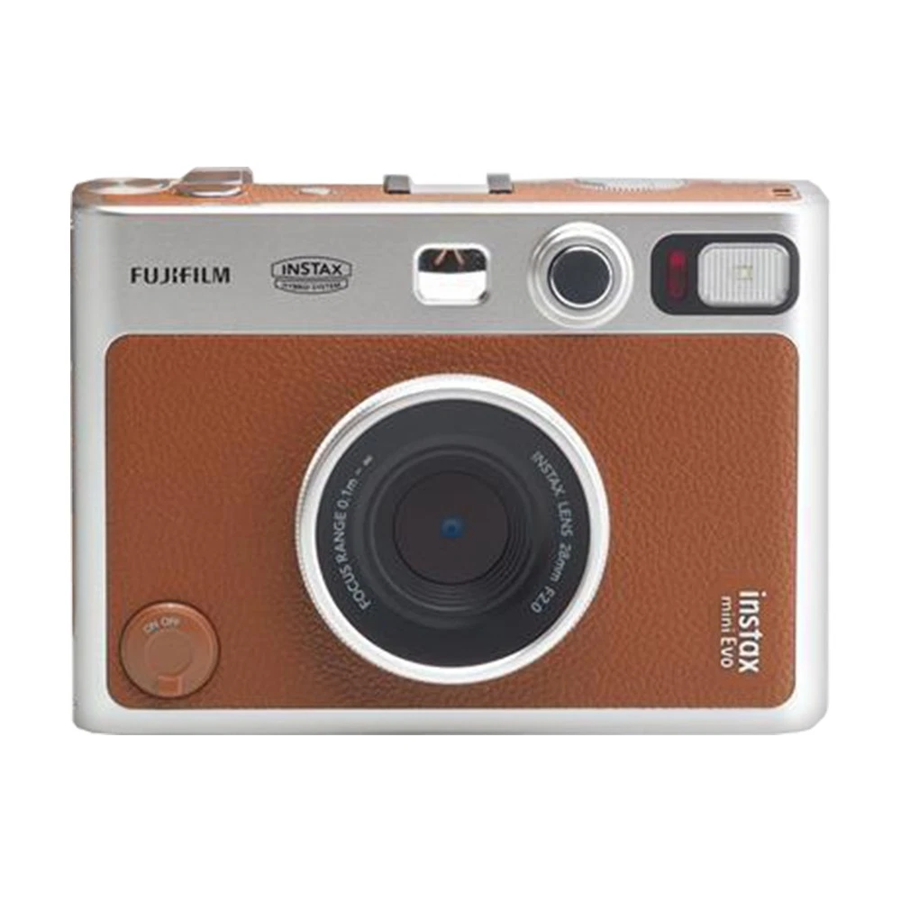
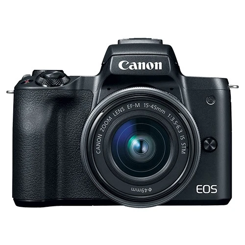
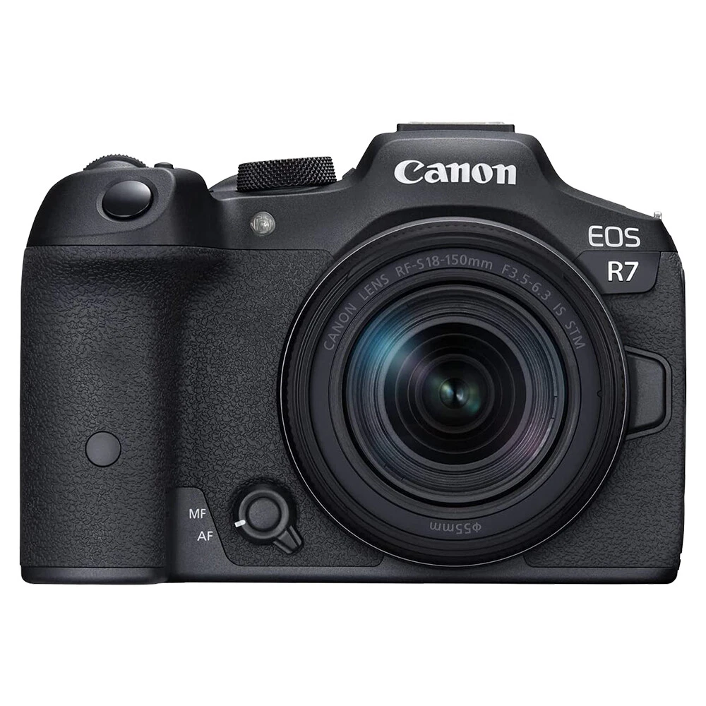

Best Beginner Cameras Worth Considering in 2026
Getting into photography or content creation can feel overwhelming at first. The goal isn’t to buy the most expensive camera — it’s to choose one that makes learning easy and enjoyable.
These cameras are commonly found through established eBay camera resellers such as Red Tag Camera. While they generally maintain strong marketplace ratings and offer a wide range of used and refurbished gear, they are not affiliated with this article in any way.
Why These Cameras?
Beginner-friendly cameras should focus on simplicity, autofocus reliability, and room to grow. Every camera below balances those factors differently.
FUJIFILM INSTAX MINI EVO Hybrid Instant Camera

The Instax Mini EVO is not a traditional learning camera — it’s a creativity-first device. You shoot digitally and choose what to print instantly.
Why beginners like it
✔ No technical barrier
✔ Instant physical prints
✔ Fun, low-pressure photography experience
Affiliate Link:
Canon PowerShot SX740 HS

A compact camera with massive zoom range. Perfect for people upgrading from smartphone photography.
Why beginners like it
✔ Extremely simple auto mode
✔ 40x optical zoom
✔ Lightweight and portable
Affiliate Link:
Canon EOS M50

One of the most recommended beginner mirrorless cameras ever made. Simple enough for auto mode, powerful enough to grow into manual photography.
Why beginners like it
✔ Flip screen for selfies & video
✔ Beginner-friendly menus
✔ Great autofocus performance
Affiliate Link:
Sony Alpha a6400

A strong step-up camera with industry-leading autofocus. Ideal for content creators and serious beginners.
Why beginners like it
✔ Fast and accurate autofocus
✔ Excellent image quality
✔ Compact but powerful system
Affiliate Link:
Canon EOS R7

A long-term investment camera built for users who want to seriously grow in photography or video.
Why beginners like it
✔ Extremely fast autofocus
✔ Great for sports and action
✔ Modern mirrorless system
Affiliate Link:
About the Seller
Many of these cameras are available through high-volume eBay camera resellers such as Red Tag Camera, which typically offers used and refurbished photography equipment at competitive prices.
They generally maintain strong feedback ratings and a large inventory, making them a useful source for beginner-friendly gear. However, buyers should always review individual listings carefully as condition and warranty terms may vary.
This seller is not affiliated with, responsible for, or aware of this article.